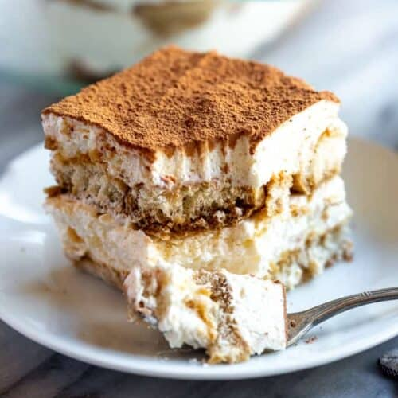

Tiramisu

Description
Layered flavours of coffee, cream, and cake; what more could you ask for? Tiramisu's name originates from the Italian phrase
tirami su, which means “pick me up”. Trust me when I say that after you give it a taste,
you'll also agree that the title is fitting.
Ingredients
- 1 1/2 cups heavy whipping cream
- 8 ounces mascarpone cheese, room temperature
- 1/3 cup granulated sugar
- 1 tsp vanilla extract
- 1 1/2 cups cold espresso
- 3 tbs coffee liqueur (eg. Khalua)
- 1 Package Lady Fingers
- Cocoa powder for dusting on top
Back